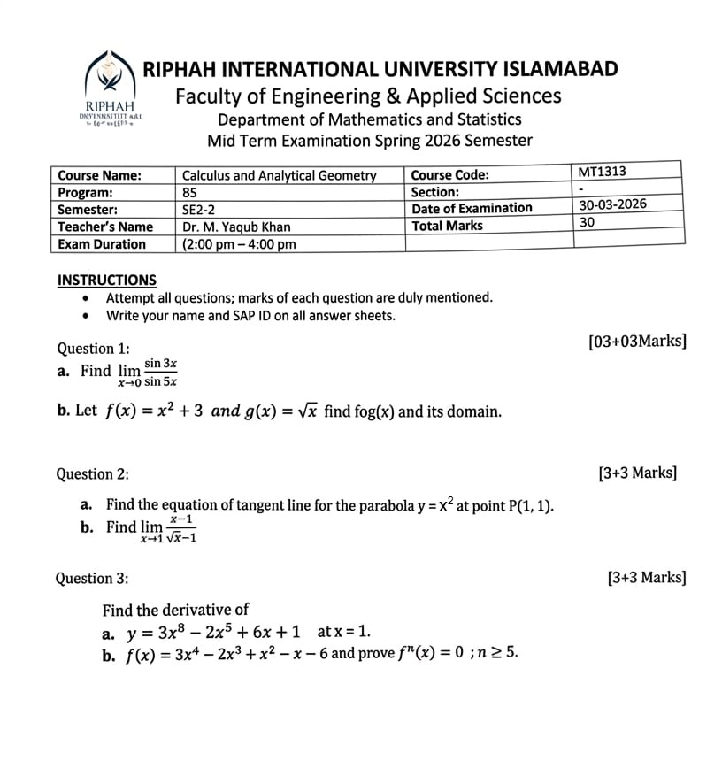

Formula Notes & Key Concepts
Core formulas, definitions, and theorems for all three chapters. Use this for quick review before practicing.
$y = f(x) - c$ — shift down $c$
$y = f(x + c)$ — shift left $c$
$y = f(x - c)$ — shift right $c$
$y = -f(x)$ — reflect over $x$-axis
$y = f(-x)$ — reflect over $y$-axis
$y = cf(x)$, $c>1$ — vertical stretch
$y = f(cx)$, $c>1$ — horizontal compression by $\tfrac{1}{c}$
$\displaystyle\lim_{x\to 0}\frac{\sin x}{x} = 1$ $\displaystyle\lim_{x\to 0}\frac{1-\cos x}{x} = 0$
$\lim[f \cdot g] = L \cdot M$
$\lim\dfrac{f}{g} = \dfrac{L}{M}$ (if $M \ne 0$)
$\lim[cf] = cL$
$\lim\sqrt[n]{f} = \sqrt[n]{L}$
$f'(x) = \displaystyle\lim_{h \to 0} \dfrac{f(x+h) - f(x)}{h}$
$\dfrac{d}{dx}[x^n] = nx^{n-1}$ (power rule)
$\dfrac{d}{dx}[cf(x)] = cf'(x)$ (constant multiple)
$(f \pm g)' = f' \pm g'$ (sum/difference)
$\left(\dfrac{f}{g}\right)' = \dfrac{f'g - fg'}{g^2}$ (Quotient Rule)
$\dfrac{d}{dx}[x^n] = nx^{n-1}$ also applies for fractions and negatives:
e.g. $\dfrac{d}{dx}[x^{-2}] = -2x^{-3}$, $\;\dfrac{d}{dx}[\sqrt{x}] = \dfrac{1}{2\sqrt{x}}$
Chapter 0 — Before Calculus
Covers §0.1 Functions, §0.2 New Functions from Old, §0.3 Families of Functions, §0.4 Inverse Functions. 5 questions chosen randomly from the full bank.
Chapter 0 Score
Functions, Families, Inverses, Transformations
Chapter 1 — Limits & Continuity
Covers §1.1–1.6: Limits, Continuity, Asymptotes, ε–δ Definition, IVT. 5 questions chosen randomly from the full bank.
Chapter 1 Score
Limits, Continuity, Asymptotes, IVT
Chapter 2 — The Derivative
Covers §2.1 Tangent Lines & Rates of Change, §2.2 The Derivative Function, §2.3 Differentiation Techniques (polynomial/power/product/quotient only), §2.4 Product & Quotient Rules. No trig derivatives or chain rule (beyond mid-term scope). 5 questions chosen randomly.
Chapter 2 Score
Tangent Lines, Derivative Rules, Rates of Change
Overall Quiz
10 questions drawn randomly from all three chapters. Ideal for final review before the exam.
Overall Score
Mixed questions — all chapters
Sample Paper

Complete Solutions
- 1Direct substitution gives $\tfrac{0}{0}$. Use $\lim_{\theta\to 0}\tfrac{\sin\theta}{\theta}=1$.
- 2Rewrite: $\dfrac{\sin 3x}{\sin 5x} = \dfrac{\sin 3x}{3x}\cdot\dfrac{3x}{5x}\cdot\dfrac{5x}{\sin 5x}$
- 3Each factor: $\lim\tfrac{\sin 3x}{3x}=1$, $\tfrac{3x}{5x}=\tfrac{3}{5}$, $\lim\tfrac{5x}{\sin 5x}=1$.
- 4Product: $1\cdot\tfrac{3}{5}\cdot 1 = \tfrac{3}{5}$.
- 1$(f\circ g)(x)=f(g(x))=f(\sqrt{x})=(\sqrt{x})^2+3=x+3$.
- 2Domain: $g(x)=\sqrt{x}$ requires $x\ge 0$. The output $\sqrt{x}\ge 0$ is in the domain of $f$. So domain of $f\circ g$ is $[0,\infty)$.
- 1Slope: $m=\lim_{h\to 0}\dfrac{(1+h)^2-1}{h}=\lim_{h\to 0}\dfrac{2h+h^2}{h}=\lim_{h\to 0}(2+h)=2$.
- 2Point-slope form through $(1,1)$: $y-1=2(x-1)$.
- 3Simplify: $y=2x-1$.
- 1Direct substitution gives $\tfrac{0}{0}$. Rationalise by multiplying by $\dfrac{\sqrt{x}+1}{\sqrt{x}+1}$.
- 2$\dfrac{(x-1)(\sqrt{x}+1)}{(\sqrt{x}-1)(\sqrt{x}+1)}=\dfrac{(x-1)(\sqrt{x}+1)}{x-1}=\sqrt{x}+1$ (for $x\ne 1$).
- 3$\lim_{x\to 1}(\sqrt{x}+1)=\sqrt{1}+1=2$.
- 1Apply power rule term by term: $\dfrac{dy}{dx}=24x^7-10x^4+6$.
- 2Evaluate at $x=1$: $24(1)-10(1)+6=24-10+6=20$.
- 1$f'(x)=12x^3-6x^2+2x-1$
- 2$f''(x)=36x^2-12x+2$
- 3$f'''(x)=72x-12$
- 4$f^{(4)}(x)=72$ (a constant)
- 5Proof: $f(x)$ has degree 4. Each differentiation reduces degree by 1. After 4 steps we get the constant $72$. Differentiating a constant gives 0. For all $n\ge 5$: $f^{(n)}(x)=\dfrac{d^{n-4}}{dx^{n-4}}[72]=0$. $\square$